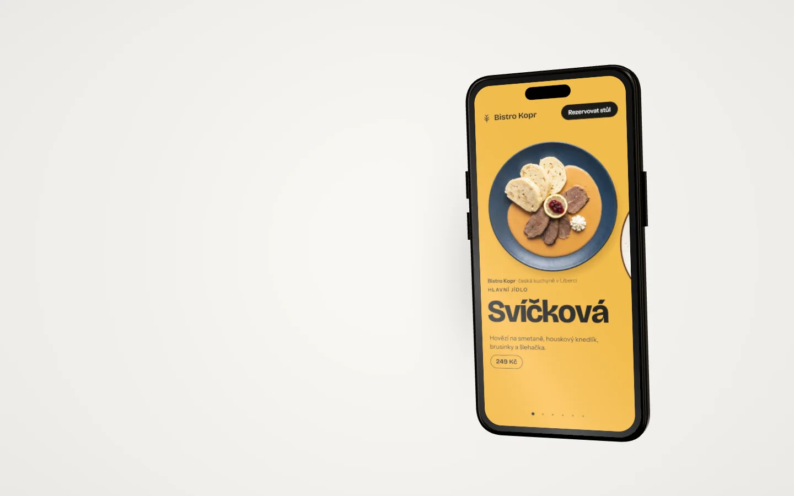
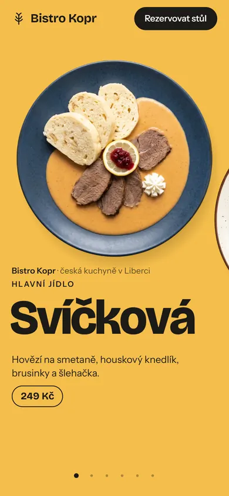
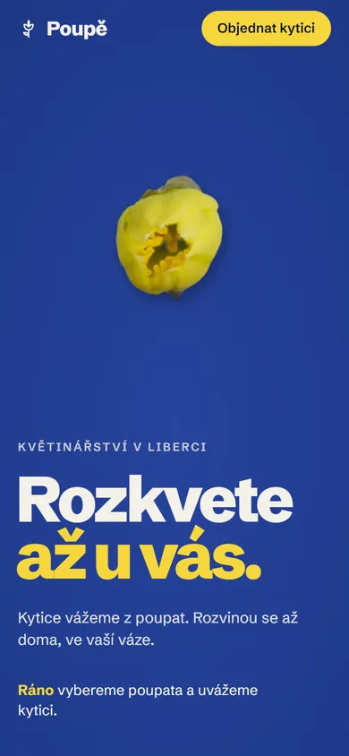
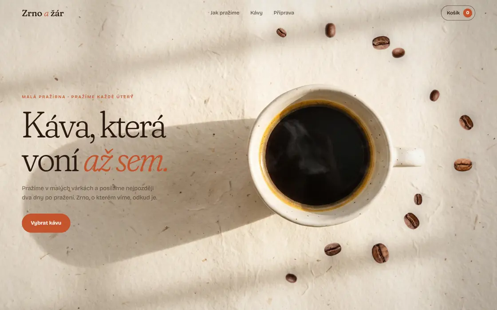
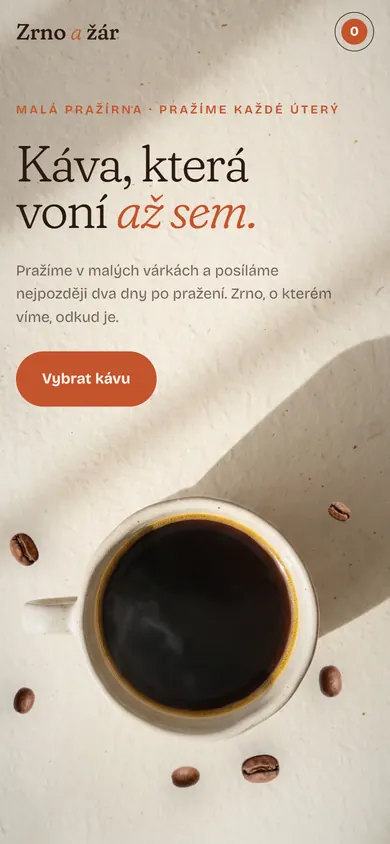

Weby pro místní firmy · Liberec
Web, díky kterému vás zákazníci najdou a zavolají.
Kdo dnes hledá firmu ve svém okolí, hledá v telefonu. Postavíme vám web, díky kterému najde právě vás. Návrh uvidíte zdarma, než cokoli zaplatíte.
8 000 Kč jednorázově. Žádné měsíční poplatky. Web i doména patří vám.
Lidé hledají i večer
Máte zavřeno. Web ne.
Zatímco spíte, web za vás přijímá rezervace, objednávky a poptávky. Ráno je máte v telefonu.
Chci ukázku zdarma01 · Co děláme
Stavíme weby pro autoservisy, bistra, kadeřnictví, řemeslníky a chaty. Takové, které zákazníka chytí za první vteřinu a druhou už vám volá.
- Návrh
Ukázku vašeho webu postavíme zdarma. Platíte, až když se vám líbí.
- Cena
8 000 Kč jednou provždy. Žádné předplatné a žádné drobné písmo.
- Vlastnictví
Web i doména jsou vaše. Nejste na nás nijak vázaní.
02 · Naše práce
Pět ukázek, každá jiná
Ukázky jsme postavili pro smyšlené firmy, aby bylo vidět, co umíme. Otevřete si je v telefonu, tam je uvidí i vaši zákazníci.
-
01 / 05
Bistro Kopr
Smyšlené bistro s českou kuchyní
Talíře se točí jako na otočném stole a s každým jídlem se celá stránka přebarví podle něj. Pod tím je polední menu na dnešní den a cesta do bistra.
Otevřít ukázku

-
02 / 05
Květinářství Poupě
Smyšlené květinářství v Liberci
Jak posouváte dolů, poupě se rozvine. Pak si kytici uvážete sami: pro koho, v jakých barvách a jak velkou, a hned vidíte cenu. Objednávka odejde SMS nebo e-mailem.
Otevřít ukázku

-
03 / 05
Sedm smrků
Smyšlená chata v Jizerských horách
Stránka postavená jako jeden záběr. Jak posouváte dolů, přejde nad chatou celý den od rozbřesku do noci a nakonec se rozsvítí světnice. Na konci je poptávka termínu.
Otevřít ukázku

-
04 / 05
Zrno a žár
Smyšlená pražírna kávy
Nad šálkem stoupá pára, křivka ukazuje, jak se káva praží, a cesta vede od zeleného zrna až k šálku. Na konci je průvodce přípravou.
Otevřít ukázku

-
05 / 05
Letokruh
Smyšlený podlahář
Jak posouváte dolů, na fotce pokoje se pokládá podlaha prkno po prknu. Pak si v tom samém pokoji vyzkoušíte dub, ořech, rybí kost nebo vinyl.
Otevřít ukázku

03 · Hotový web pro skutečnou firmu
Autoservis Žahourek, Česká Lípa
Autoservis a pneuservis. Šest stránek a objednávka servisu online, která přijde majiteli rovnou do e-mailu.


- pod 1 snačtení stránky (naše měření)
- 6stránek, každá pro jednu věc
- 1 ťuknutía zákazník volá
04 · Jak to probíhá
Nejdřív uvidíte, co dostanete
Tři kroky a žádné riziko. Návrh je zdarma a většinu platíte až za hotový web.
- 1
Ukázka zdarma
Z veřejných informací o vaší firmě postavíme návrh webu. Uvidíte ho dřív, než se rozhodnete.
- 2
Doladíme ho s vámi
Texty, fotky, barvy, ceník. Co chcete mít jinak, změníme.
- 3
Spustíme ho na vaší adrese
Zařídíme doménu i spuštění. Pak doplatíte zbytek a web i doména jsou vaše.
05 · Cena
Celá cena na jedné účtence
Žádné předplatné a žádné drobné písmo. Návrh je zdarma a většinu platíte až za hotový web.
WHYTE LYNX
Weby pro místní firmy · Liberec
- Návrh webu předemzdarma
- Web na míru, mobil i počítačv ceně
- Propojení s Googlem a Mapamiv ceně
- Formulář do vašeho e-mailuv ceně
- Zařízení domény a spuštěnív ceně
- Záloha po schválení návrhu2 000 Kč
- Doplatek, až web běží6 000 Kč
Celkem8 000 Kč
- Dál platíte jen doménuzhruba 200 Kč/rok
- Péče o webnepovinná
Web i doména patří vám. Děkujeme.
Nepovinné
Péče o web
Web běží i bez nás a nic dalšího platit nemusíte. Kdo chce mít změny bez starostí, může si péči vzít při předání webu.
- Změny textů, cen, fotek a otevírací doby do 2 pracovních dnů
- Starost o profil firmy na Googlu a Mapách
- Jednou za čtvrt roku zpráva, kolik lidí na web přišlo
250 Kčměsíčně
Platí se jednou ročně předem, 3 000 Kč jedním dokladem s QR kódem. Bez péče stojí každá pozdější úprava 500 Kč.
06 · Kdo za tím je
Web vám udělá malá parta z Liberce
Jsme tři. Každou firmu má na starosti jeden z nás a s ním mluvíte od první ukázky až po spuštění. Weby děláme pro firmy z celé republiky a na každé ukázce je podepsaný ten, kdo ji postavil.
07 · Časté otázky
Na co se lidé ptají nejčastěji
Kolik web stojí?
8 000 Kč jednorázově, bez měsíčních poplatků. Jediný další náklad je doména, zhruba 200 Kč za rok.
Kdy se platí?
Návrh je zdarma. Když se vám líbí, zaplatíte zálohu 2 000 Kč, zbylých 6 000 Kč až ve chvíli, kdy web běží na vaší adrese. Převodem podle dokladu s QR kódem.
Komu patří web a doména?
Vám. Web i doména jsou vaše, ne naše, a nejste na nás nijak vázaní.
Musím platit péči o web?
Ne. Péče vychází na 250 Kč měsíčně (platí se jednou ročně 3 000 Kč), je nepovinná a volí se až při předání webu. Bez ní web běží dál a nic nestojí, jen každá pozdější úprava stojí 500 Kč.
Co když se mi ukázka nebude líbit?
Nic se neděje a nic neplatíte. Ukázka je jen ukázka: vzhled, barvy i texty se dají celé předělat. A když web nechcete, stačí říct.
Co od vás budeme potřebovat?
Na začátek jen název firmy. Ukázku postavíme z veřejných informací. Vlastní fotky, ceník a texty, které chcete mít jinak, doladíme spolu.
Mám už starý web. Můžete ho předělat?
Ano. Postavíme nový a spustíme ho na adrese, kterou už máte, takže zákazníci vás najdou tam, kde jsou zvyklí.
Co když budu chtít později něco změnit?
Napíšete nebo zavoláte a upravíme to. Jedna pozdější úprava stojí 500 Kč. Kdo chce mít změny bez starostí, může si při předání webu zvolit nepovinnou péči za 250 Kč měsíčně: změny do 2 pracovních dnů, starost o profil na Googlu a jednou za čtvrt roku zpráva o návštěvnosti.
08 · Kontakt
Ukázku vašeho webu pošleme zdarma
Stačí jméno firmy a kontakt. Ozveme se do druhého dne a ukázku pošleme odkazem, nic nemusíte instalovat.